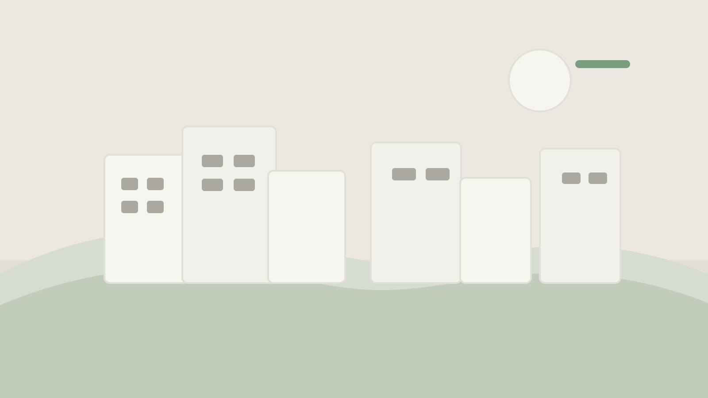

The first thing I noticed in Kyoto was not a temple or a famous street. It was the way the day softened after late afternoon. Shops closed their doors without rushing, bicycles leaned quietly against walls, and people seemed to trust that they did not need to fill every part of the evening with noise.
I only had a few days there, so I stopped trying to see everything. I picked a neighborhood, walked until I felt tired, found somewhere small to eat, and let the rest of the evening happen at its own pace.
The comfort of ordinary details
Most of what stayed with me was ordinary: a convenience store run, a cup of coffee at a counter with only six seats, the sound of rain on a quiet road just after sunset. Travel memories are often sold to us as big moments, but I think the better ones are smaller and easier to live inside.

Walking without needing an outcome
The best evening was the one I planned the least. I crossed a narrow bridge, followed a side street because it looked calm, and ended up spending an hour in a bookstore where I could not read most of the covers. It still felt like the right place to be.
That might be the thing I want to bring home from travel more often: not a list of sights completed, but a better sense of how to move through a place without demanding too much from it.
Afterward
Back home, Kyoto mostly returns to me in fragments. A certain kind of warm streetlight. The sound of footsteps on smaller roads. The feeling of having enough time to notice where I was. I like that those are the parts that lasted.